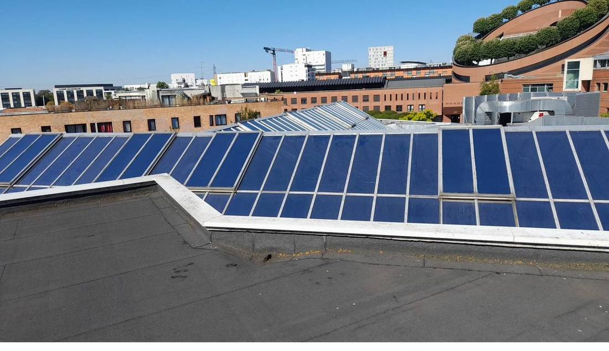
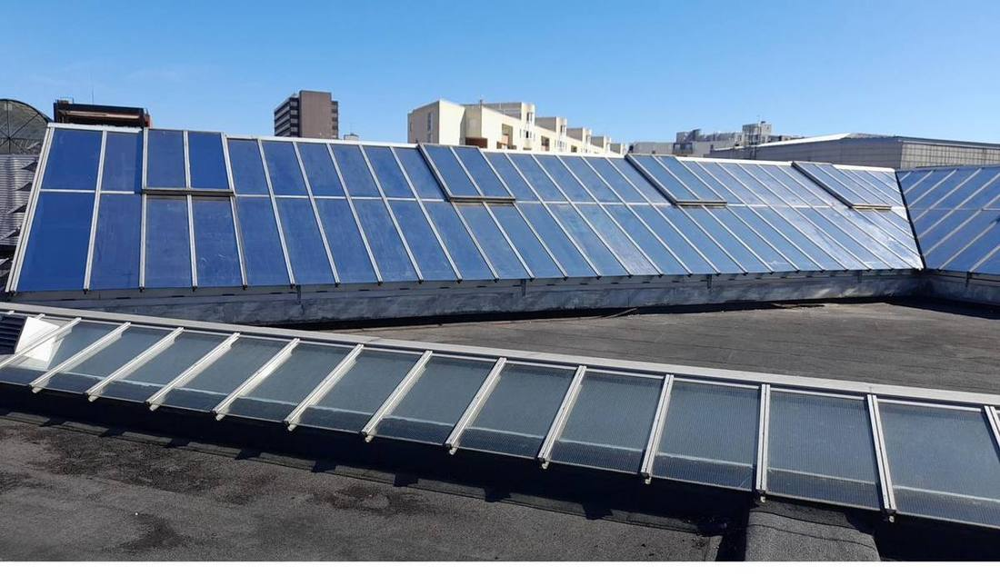

Film solaire sur les verrières de toit du Carré Sénart.
Skylights de toiture sur un centre commercial de grande surface en Seine-et-Marne. Film solaire bleu haute performance posé côté intérieur sur des dizaines de panneaux inclinés — chantier en hauteur, accès toiture.

Verrières de toit après pose — film solaire bleu · Carré Sénart (77)
Comparatif en cours de pose — panneaux traités (bleu) et non traités (transparent) · Carré SénartLe contexte
Les verrières de toit d'une grande surface du Carré Sénart (Seine-et-Marne, 77) présentaient un problème classique des centres commerciaux : en été, la chaleur traversant les skylights rendait les allées centrales inconfortables pour les clients et augmentait massivement la charge de climatisation — coût et consommation énergétique à la hausse.
L'objectif : réduire significativement les apports thermiques par les verrières sans remplacer les panneaux de toiture, coûteux et nécessitant une fermeture partielle du centre.
La solution technique
Film solaire haute performance, pose côté intérieur depuis la toiture. Caractéristiques du film retenu :
- Rejet d'énergie solaire (TSER) : 78 %
- Filtre UV : 99 %
- Transmission lumineuse : 18 % — les allées restent correctement éclairées naturellement
- Teinte : bleu neutre — visible sur les photos avant/après
La pose sur des skylights inclinés en toiture requiert des équipes habituées au travail en hauteur et à la pose sur des panneaux non horizontaux. L'application de l'eau savonneuse et le lissage à la raclette se font différemment sur du verre incliné.
L'intervention
Accès toiture sécurisé, harnais, coordination avec le gestionnaire du centre. Pose réalisée en dehors des heures d'ouverture pour ne pas gêner la circulation dans les allées. Les photos montrent clairement le résultat : les panneaux traités apparaissent en bleu opaque alors que les non traités (en attente de pose) restent transparents.
Ce que ce chantier illustre
Les verrières de toit de grandes surfaces sont l'un des gisements d'économies énergétiques les plus mal exploités en France. La pose d'un film solaire représente moins de 5 % du coût d'un remplacement de vitrage, pour 70 à 80 % du bénéfice thermique. ROI typique sur ce type de chantier : 2 à 4 ans.
Verrières, skylights, toiture vitrée ?
On monte. On pose. Résultat immédiat.
Centres commerciaux, entrepôts, bâtiments à atrium — nous intervenons sur toutes les typologies de verrières. Diagnostic gratuit, devis sous 48 h.